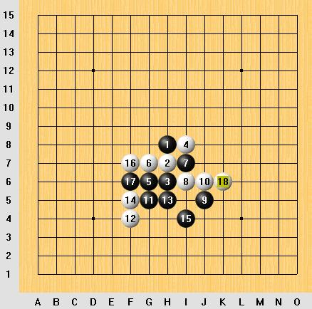

寒星定式一书里,这个白18有盘端问题吧?
首页
五子棋交流
#1 寒星定式一书里,这个白18有盘端问题吧? 作者：sheal 发表时间：2007-6-27 19:07:17
如果没有盘端问题,请问怎么胜?
这个白4也是必胜的,不过就是要换黑9

#2 Re:寒星定式一书里,这个白18有盘端问题吧? 作者：屏蔽 发表时间：2007-6-27 21:39:37
你仔细找找，这个白18似乎不能必胜，论坛里讨论过，并且给出了黑棋的另一必胜法。
#3 Re:寒星定式一书里,这个白18有盘端问题吧? 作者：sheal 发表时间：2007-6-28 17:55:10
找到了,谢谢
寒星通金星的一个变化之我见